We're given a website that lets you collect a daily bonus of $1,000 by clicking a button. The starting balance is $1,000, but to redeem the secret reward and reveal the flag, you need $3,000 — meaning you'd normally have to wait two days. The challenge? Bypassing that restriction.
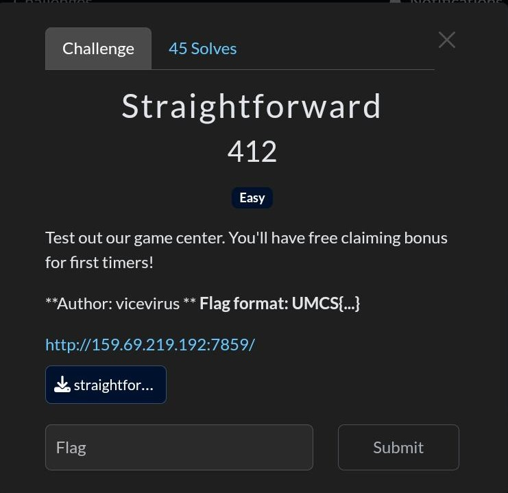
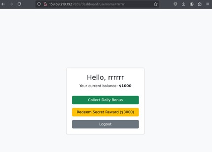
Race condition — the /claim endpoint doesn't handle concurrent requests atomically, allowing us to claim the bonus multiple times in a single burst before the server can update the balance.
Open Burp Suite and intercept the HTTP request fired when clicking the "Collect Bonus" button.
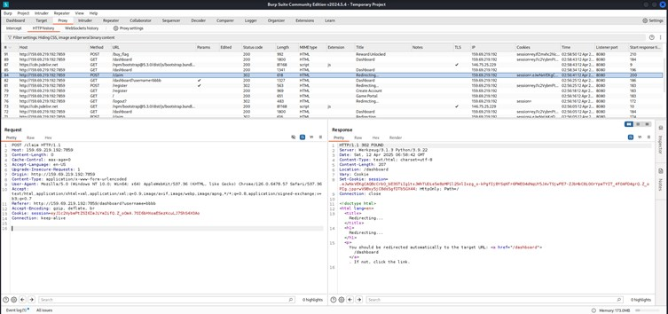
Send the intercepted POST /claim request to the Repeater.
From there, use "Send Group in Parallel" to fire multiple identical requests simultaneously.
This exploits the race window before the server records the first claim.
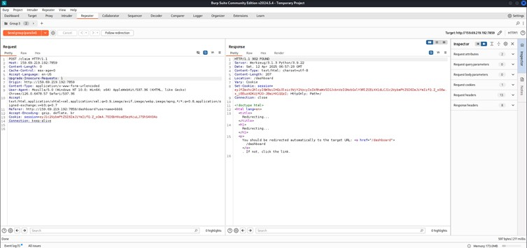
After the parallel requests land, the balance jumps well past $3,000 — multiple claims processed before any could be rejected.
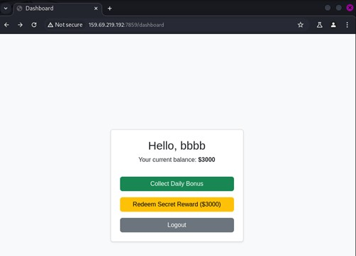
Click Redeem Rewards. The server now accepts the request and reveals the flag.
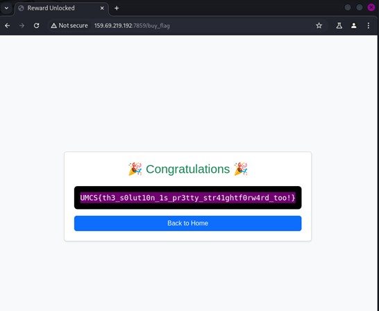
A race condition occurs when a system's behaviour depends on the sequence or timing of uncontrollable events. Here, the server checks the cooldown and updates it in two separate operations — sending many requests simultaneously lets us slip through the gap between those two steps. The fix is an atomic check-and-update (e.g. database transactions or idempotency keys).
We're given a website that accepts a URL and returns the HTTP response code for that page — essentially a server-side URL fetcher. The challenge description teases: "I left my hopes_and_dreams on the server."
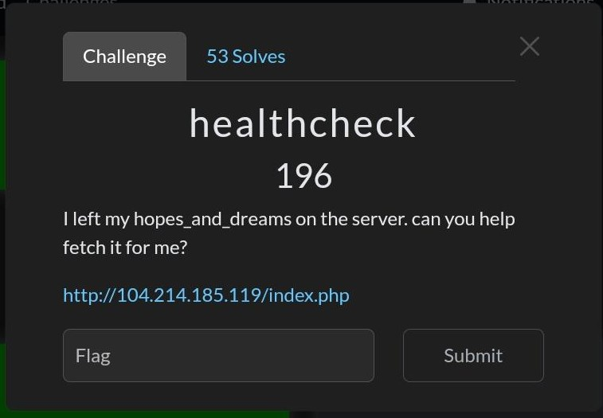
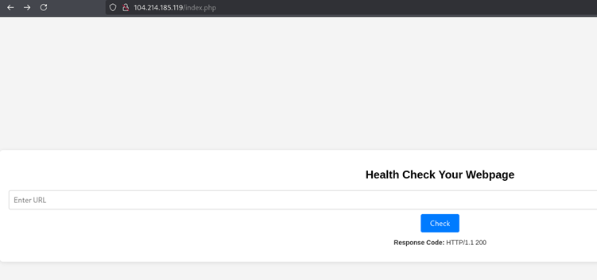
Initial attempts with XSS, SQLi, and various command injection payloads all failed. The application appeared to only fetch URLs and return status codes — no obvious injection points. Shifting approach, we recognised this as a classic SSRF (Server-Side Request Forgery) target.
SSRF — the server fetches arbitrary URLs supplied by the user, including internal resources. By pointing it at our own webhook, we can observe what data the server sends out of band, and by crafting the URL path, we can probe internal file locations.
Go to webhook.site and generate a unique listener URL. This will receive any HTTP requests made by the target server.
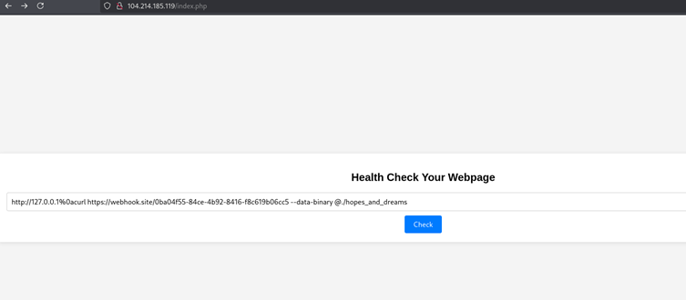
The challenge hint says the secret is stored at a path called hopes_and_dreams on the server.
We craft a payload that points the healthcheck at our webhook with the hint as a path component,
so the server's outbound request leaks information about itself:
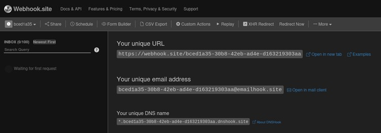
Back on webhook.site, the incoming request from the target server is captured. The flag is embedded in the request headers or body sent by the server.
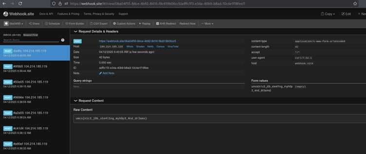
Server-Side Request Forgery tricks a server into making HTTP requests on your behalf. The server often has access to internal resources (metadata APIs, localhost services, internal files) that you can't reach directly. Using an out-of-band channel like webhook.site is a reliable way to confirm SSRF and exfiltrate data even when the app doesn't echo the response body.